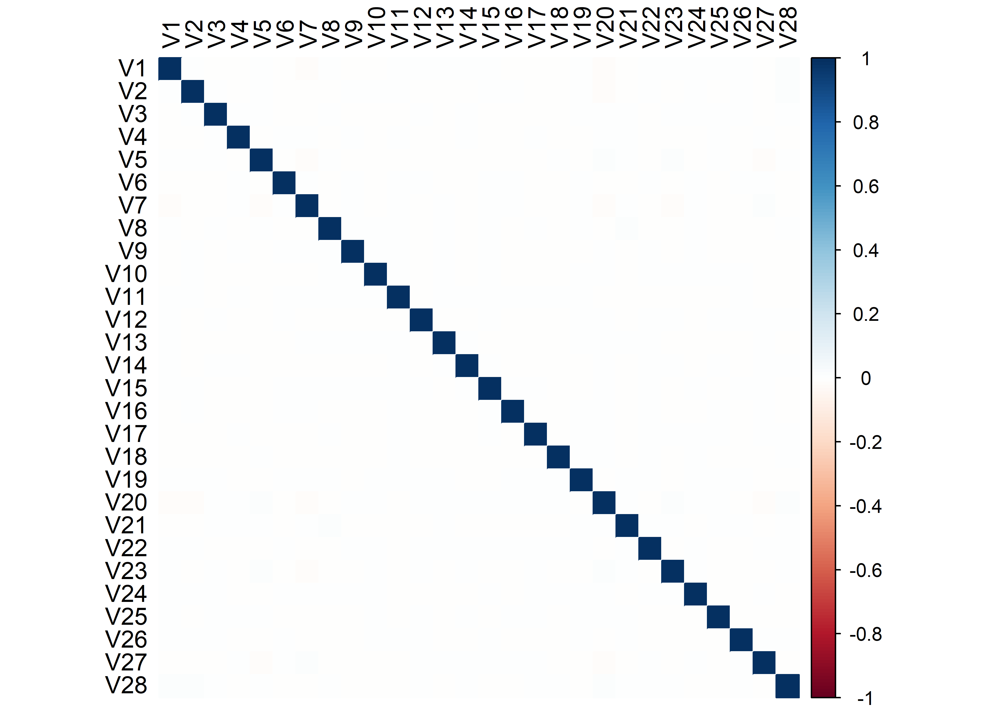
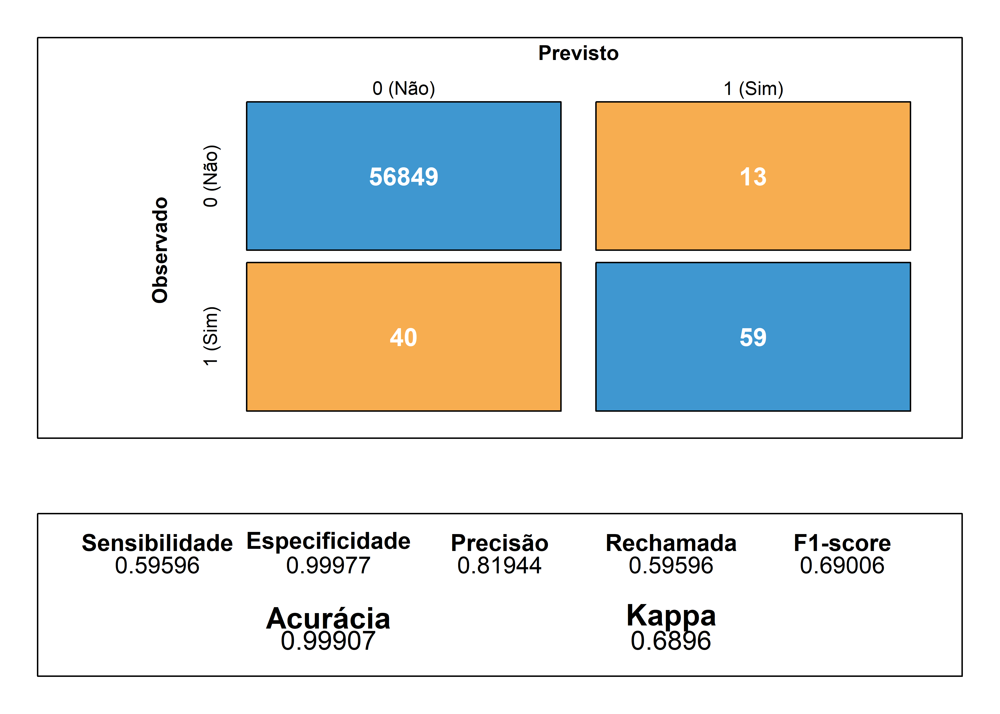

Projeto Final: Modelo de Classificação de Fraude para Dados Desbalanceados
curso-R, nosso objetivo principal é explorar alguns recursos de preparação, análise e modelagem de dados dentro do software R, com base em um exemplo de classificação de fraude a partir de dados de transações financeiras via cartão de crédito realizadas ao longo de dois dias de setembro de 2013 na Europa.
1 Introdução
A detecção de fraude é um processo, respectivamente, trabalhoso e desafiador para companhias de cartões de crédito por causa do volume enorme de transações completadas diariamente e porque muitas transações fraudulentas aparentam ser transações normais.
Um modelo para identificação de transações fraudulentas é, tipicamente, um exemplo de classificação binária desbalanceada na qual o objetivo principal é classificar corretamente um evento positivo (no caso, uma transação fraudulenta). O termo “desbalanceado” vem do fato de que, em geral, o número de fraudes é muito menor que o número de transações normais, o que gera algumas dificiulades para que modelos tradicionais de classificação (como regressão logística ou árvore de decisão) realizem previsões precisas quanto ao evento positivo. Nessas condições, algumas métricas como precisão e a rechamada (recall) são mais adequadas para avaliar a qualidade de um modelo preditivo de classificação binária se comparadas, por exemplo, à acurácia geral ou a área sob a curva ROC.
Neste projeto, que foi inspirado no post original de Jason Brownlee no site Machine Learning Mastery (clique aqui para acessá-lo), nós utilizaremos o software R (R Core Team, 2023) para a importação e análise descritiva de dados de fraude via transações por cartão de crédito, assim como a construção e avaliação de dois modelos de classificação quando aplicados a dados desbalanceados em relação à distribuição de uma variável resposta que, por sua vez, identifica se uma transação foi fraudenta ou não.
Antes de apresentarmos o conjunto de dados de fraude que será utilizado neste projeto, vamos carregar, dentro do ambiente R, os pacotes necessários para a nossa análise.
Ao longo deste projeto, a maioria dos procedimentos de preparação de dados serão realizados a partir de funções do pacote dplyr (Wickham et al., 2023), que faz parte da coleção de pacotes tidyverse (Wickham, 2023). Para a construção das tabelas, serão utilizados os pacotes knitr (Xie, 2023), kableExtra (Zhu, 2021) e janitor (Firke, 2023). Os outros pacotes serão citados posteriormente.
2 Conjunto de Dados de Fraude
O conjunto de dados que será analisado contém transações, via cartão de crédito, realizadas por clientes europeus em setembro de 2013 e está disponível online em https://www.kaggle.com/datasets/mlg-ulb/creditcardfraud.
2.1 Descrição dos Dados
Realizou-se a coleta dos dados ao longo de dois dias, de modo que foram detectadas 492 fraudes, o que representa apenas 0,172% de todas as 284807 transações realizadas no período.
Devido a questões de confidencialidade, as 28 variáveis de entrada originais foram transformadas por meio de Análise de Componentes Principais (PCA), resultando nas componentes V1, V2, \(\cdots\), V28 que serão nossas candidatas a variáveis preditoras.
A variável time representa o tempo, em segundos, entre a primeira transação e a respectiva transação, de modo que as transações já estão ordenadas em ordem cronológica no conjunto de dados original e, portanto, a primeira linha representa a primeira transação realizada. Por sua vez, a variável amount contém o valor monetário (provavelmente em euros) de cada transação - por simplificação, não a utilizaremos como um preditor nos dois modelos de classificação de fraude.
Finalmente, a variável class é a nossa variável resposta, assumindo o valor 1 em caso de fraude e o valor 0 caso contrário. Como dito anteriormente, somente 0,172% das transações foram detectadas como fraudulentas, o que invialibiliza o uso da estatística de acurácia como uma ferramenta totalmente confiável de avaliação da qualidade geral do ajuste do modelo. Outras estatísticas como precisão (precision) e rechamada (recall), além da própria área sobre a curva de precisão-rechamada (AUPRC), são mais adequadas quando os dados são muito desbalanceados em relação às categorias da variável resposta. Em particular, nós trabalharemos especialmente com a precisão e a rechamada.
2.2 Importação dos Dados
Para facilitar a reprodutibilidade da análise, o conjunto de dados original foi previamente dividido em cinco arquivos do tipo CSV que estão armazenados no meu repositório pessoal. Cada arquivo contém os nomes das variáveis na primeira linha e pode ser importado como um data frame a partir da função read.csv, como exibido neste trecho de código:
creditcard_01 <- read.csv(paste0("https://raw.githubusercontent.com/estefano-souza",
"/projeto-final/main/dados/creditcard_01.csv"),
header=TRUE,
stringsAsFactors=FALSE)
creditcard_02 <- read.csv(paste0("https://raw.githubusercontent.com/estefano-souza",
"/projeto-final/main/dados/creditcard_02.csv"),
header=TRUE,
stringsAsFactors=FALSE)
creditcard_03 <- read.csv(paste0("https://raw.githubusercontent.com/estefano-souza",
"/projeto-final/main/dados/creditcard_03.csv"),
header=TRUE,
stringsAsFactors=FALSE)
creditcard_04 <- read.csv(paste0("https://raw.githubusercontent.com/estefano-souza",
"/projeto-final/main/dados/creditcard_04.csv"),
header=TRUE,
stringsAsFactors=FALSE)
creditcard_05 <- read.csv(paste0("https://raw.githubusercontent.com/estefano-souza",
"/projeto-final/main/dados/creditcard_05.csv"),
header=TRUE,
stringsAsFactors=FALSE)2.3 Preparação dos Dados
A seguir, os cinco data frames são unidos, de forma sequencial, para formar um único data frame chamado creditcard que contém todas as transações realizadas. Contudo, a primeira variável (coluna sem nome) contém o índice original de cada transação no conjunto de dados: dentro do R, ela recebe o nome automático X e os dados são ordenados a partir dos seus valores para retomarmos a ordenação original.
Após a união, a variável X é imediatamente excluída e, finalmente, os cinco data frames originais são excluídos do ambiente de trabalho.
A seguir, apresentamos uma visualização básica das primeiras transações (linhas) do conjunto completo de dados na Tabela 1. Observe que todas as variáveis são numéricas, incluindo a variável class.
| time | V1 | V2 | V3 | V4 | V5 | V6 | V7 | V8 | V9 | V10 | V11 | V12 | V13 | V14 | V15 | V16 | V17 | V18 | V19 | V20 | V21 | V22 | V23 | V24 | V25 | V26 | V27 | V28 | amount | class |
|---|---|---|---|---|---|---|---|---|---|---|---|---|---|---|---|---|---|---|---|---|---|---|---|---|---|---|---|---|---|---|
| 0 | -1.3598 | -0.0728 | 2.5363 | 1.3782 | -0.3383 | 0.4624 | 0.2396 | 0.0987 | 0.3638 | 0.0908 | -0.5516 | -0.6178 | -0.9914 | -0.3112 | 1.4682 | -0.4704 | 0.2080 | 0.0258 | 0.4040 | 0.2514 | -0.0183 | 0.2778 | -0.1105 | 0.0669 | 0.1285 | -0.1891 | 0.1336 | -0.0211 | 149.62 | 0 |
| 0 | 1.1919 | 0.2662 | 0.1665 | 0.4482 | 0.0600 | -0.0824 | -0.0788 | 0.0851 | -0.2554 | -0.1670 | 1.6127 | 1.0652 | 0.4891 | -0.1438 | 0.6356 | 0.4639 | -0.1148 | -0.1834 | -0.1458 | -0.0691 | -0.2258 | -0.6387 | 0.1013 | -0.3398 | 0.1672 | 0.1259 | -0.0090 | 0.0147 | 2.69 | 0 |
| 1 | -1.3584 | -1.3402 | 1.7732 | 0.3798 | -0.5032 | 1.8005 | 0.7915 | 0.2477 | -1.5147 | 0.2076 | 0.6245 | 0.0661 | 0.7173 | -0.1659 | 2.3459 | -2.8901 | 1.1100 | -0.1214 | -2.2619 | 0.5250 | 0.2480 | 0.7717 | 0.9094 | -0.6893 | -0.3276 | -0.1391 | -0.0554 | -0.0598 | 378.66 | 0 |
| 1 | -0.9663 | -0.1852 | 1.7930 | -0.8633 | -0.0103 | 1.2472 | 0.2376 | 0.3774 | -1.3870 | -0.0550 | -0.2265 | 0.1782 | 0.5078 | -0.2879 | -0.6314 | -1.0596 | -0.6841 | 1.9658 | -1.2326 | -0.2080 | -0.1083 | 0.0053 | -0.1903 | -1.1756 | 0.6474 | -0.2219 | 0.0627 | 0.0615 | 123.50 | 0 |
| 2 | -1.1582 | 0.8777 | 1.5487 | 0.4030 | -0.4072 | 0.0959 | 0.5929 | -0.2705 | 0.8177 | 0.7531 | -0.8228 | 0.5382 | 1.3459 | -1.1197 | 0.1751 | -0.4514 | -0.2370 | -0.0382 | 0.8035 | 0.4085 | -0.0094 | 0.7983 | -0.1375 | 0.1413 | -0.2060 | 0.5023 | 0.2194 | 0.2152 | 69.99 | 0 |
| 2 | -0.4260 | 0.9605 | 1.1411 | -0.1683 | 0.4210 | -0.0297 | 0.4762 | 0.2603 | -0.5687 | -0.3714 | 1.3413 | 0.3599 | -0.3581 | -0.1371 | 0.5176 | 0.4017 | -0.0581 | 0.0687 | -0.0332 | 0.0850 | -0.2083 | -0.5598 | -0.0264 | -0.3714 | -0.2328 | 0.1059 | 0.2538 | 0.0811 | 3.67 | 0 |
| 4 | 1.2297 | 0.1410 | 0.0454 | 1.2026 | 0.1919 | 0.2727 | -0.0052 | 0.0812 | 0.4650 | -0.0993 | -1.4169 | -0.1538 | -0.7511 | 0.1674 | 0.0501 | -0.4436 | 0.0028 | -0.6120 | -0.0456 | -0.2196 | -0.1677 | -0.2707 | -0.1541 | -0.7801 | 0.7501 | -0.2572 | 0.0345 | 0.0052 | 4.99 | 0 |
| 7 | -0.6443 | 1.4180 | 1.0744 | -0.4922 | 0.9489 | 0.4281 | 1.1206 | -3.8079 | 0.6154 | 1.2494 | -0.6195 | 0.2915 | 1.7580 | -1.3239 | 0.6861 | -0.0761 | -1.2221 | -0.3582 | 0.3245 | -0.1567 | 1.9435 | -1.0155 | 0.0575 | -0.6497 | -0.4153 | -0.0516 | -1.2069 | -1.0853 | 40.80 | 0 |
| 7 | -0.8943 | 0.2862 | -0.1132 | -0.2715 | 2.6696 | 3.7218 | 0.3701 | 0.8511 | -0.3920 | -0.4104 | -0.7051 | -0.1105 | -0.2863 | 0.0744 | -0.3288 | -0.2101 | -0.4998 | 0.1188 | 0.5703 | 0.0527 | -0.0734 | -0.2681 | -0.2042 | 1.0116 | 0.3732 | -0.3842 | 0.0117 | 0.1424 | 93.20 | 0 |
| 9 | -0.3383 | 1.1196 | 1.0444 | -0.2222 | 0.4994 | -0.2468 | 0.6516 | 0.0695 | -0.7367 | -0.3668 | 1.0176 | 0.8364 | 1.0068 | -0.4435 | 0.1502 | 0.7395 | -0.5410 | 0.4767 | 0.4518 | 0.2037 | -0.2469 | -0.6338 | -0.1208 | -0.3850 | -0.0697 | 0.0942 | 0.2462 | 0.0831 | 3.68 | 0 |
3 Partições de Treinamento e Teste
Quando os dados são muito desbalanceados em relação à distribuição das categorias da variável resposta, torna-se ainda mais fundamental dividi-los em partições (subconjuntos) de treinamento e de teste para a construção de um modelo preditivo e, a partir disto, garantir que este modelo fará boas previsões para dados que não foram utilizados na sua construção.
Para a nossa análise, vamos selecionar, de forma aleatória, aproximadamente 80% das transações para treinarmos o nosso modelo: este novo data frame será chamado de train_data e será a nossa partição de treinamento. Por sua vez, todas as outras transações serão incluídas no data frame chamado test_data, que será a nossa partição de teste.
Temos que garantir que a distribuição da variável class nas duas partições seja semelhante à distribuição original, ou seja, cerca de 0,172% das transações devem ser fraudulentas nos dois data frames; para isso, vamos utilizar a função createDataPartition do pacote [caret] (Kuhn, 2023). Além disto, todas as variáveis V1 a V28 serão padronizadas de modo que cada uma delas, dentro de cada partição, tenha média 0 e desvio padrão 1.
Como uma etapa adicional na preparação das partições, vamos excluir as variáveis time e amount, uma vez que elas não serão utilizadas na construção dos modelos.
set.seed(3456)
trainIndex <- caret::createDataPartition(creditcard$class, p = 0.8,
list = FALSE, times = 1)
train_data <- creditcard[trainIndex, ] |>
dplyr::mutate_at(vars(starts_with("V")), scale) |>
dplyr::select(-c(time, amount))
test_data <- creditcard[-trainIndex, ] |>
dplyr::mutate_at(vars(starts_with("V")), scale) |>
dplyr::select(-c(time, amount))3.1 Estatísticas Descritivas
Como esperado, a distribuição da variável class se manteve semelhante à distribuição original tanto na partição de treinamento (Tabela 2) quanto na partição de teste (Tabela 3).
| class | Frequência | Porcentagem |
|---|---|---|
| 0 | 227453 | 99.828 |
| 1 | 393 | 0.172 |
| Total | 227846 | 100.000 |
| class | Frequência | Porcentagem |
|---|---|---|
| 0 | 56862 | 99.826 |
| 1 | 99 | 0.174 |
| Total | 56961 | 100.000 |
A partição de treinamento train_data contém 227846 transações, o que representa um pouco mais de 80% de todas as transações. Por sua vez, a partição de teste test_data contém 56961 transações, um pouco menos de 20% do total.
Como um exemplo de análise de cada variável candidata a preditor, apresentamos as estatísticas descritivas básicas da variável V1 na partição de treinamento (Tabela 4) e na partição de teste (Tabela 5), agrupadas pelos valores da variável resposta class em cada partição. Em particular, observe que, levando-se em conta somente as transações fraudulentas (class = 1), os valores dessas estatísticas são semelhantes ao compararmos as duas partições, mesmo com apenas 492 transações deste tipo no conjunto de dados completo.
| class | Média | Mediana | Desvio Padrão | Mínimo | Máximo |
|---|---|---|---|---|---|
| 0 | 0.004 | 0.011 | 0.986 | -28.852 | 1.256 |
| 1 | -2.392 | -1.231 | 3.327 | -14.936 | 1.091 |
| class | Média | Mediana | Desvio Padrão | Mínimo | Máximo |
|---|---|---|---|---|---|
| 0 | 0.005 | 0.005 | 0.981 | -23.745 | 1.237 |
| 1 | -2.609 | -1.104 | 3.964 | -15.483 | 1.061 |
3.2 Matriz de Correlações dos Preditores
Como explicado na Seção 2, as 28 variáveis de entrada originais foram transformadas em componentes principais para manter a confidencialidade das informações sobre os clientes. Componentes construídas via PCA não são correlacionadas, o que favorece a sua utilização como preditores em modelos como a regressão logística, que supõe a ausência de colinearidade (correlação) perfeita entre as variáveis independentes.
Apenas como uma verificação simples, exibimos uma representação gráfica da matriz de correlações de Pearson das variáveis padronizadas V1 a V28 para os dados da partição de treinamento (Figura 1) e da partição de teste (Figura 2). O cálculo das correlações e a visualização dos valores é feita a partir da função corrplot do pacote [corrplot] (Wei & Simko, 2021).
De fato, os valores de todas as correlações entre cada par de variáveis distintas estão muito próximos de zero, independentemente da partição.

Nas próximas duas seções, vamos construir dois modelos de classificação e, então, comparar seus desempenhos em termos das estatísticas de qualidade do ajuste para as previsões de ocorrência de fraude nos dados da partição de teste.
4 Modelo 1: Regressão Logística
Nosso primeiro modelo de classificação será baseado na regressão logística binária (McCullagh & Nelder, 1989), na qual a variável resposta possui somente duas categorias. De uma forma resumida, pode-se dizer que este tipo de regressão divide o espaço gerado pelas variáveis preditoras em dois subespaços, de modo que uma transação será classificada como fraude (evento “positivo”) ou não-fraude (evento “negativo”) se o valor de uma combinação linear dos valores dos preditores para esta transação cair dentro do respectivo subespaço.
4.1 Construção do Modelo Logístico
Para a estimação dos parâmetros do nosso modelo de regressão logística, vamos usar a função glm com as opções padrão para a construção deste tipo de modelo (família binomial com função de ligação \(logit(p)=\log{(\frac{p}{1 - p})}\), onde \(0 < p < 1\) é a probabilidade de ocorrência do evento positivo) e utilizando os dados da partição de treinamento train_data.
A seguir, vamos apresentar os resultados do modelo e avaliar a sua capacidade de fazer boas previsões a partir dos dados da partição de teste.
4.2 Resumo do Modelo Logístico
4.2.1 Coeficientes Estimados e Significância
A função summary aplicada ao modelo construído gera o seguinte resumo com os valores das estimativas dos coeficientes de cada variável preditora e os respectivos testes de significância estatística.
summary(modelo_trn)
Call:
glm(formula = class ~ ., family = binomial(link = "logit"), data = train_data)
Coefficients:
Estimate Std. Error z value Pr(>|z|)
(Intercept) -8.721792 0.167508 -52.068 < 2e-16 ***
V1 0.189860 0.093878 2.022 0.043134 *
V2 -0.135743 0.096064 -1.413 0.157642
V3 0.040672 0.077375 0.526 0.599132
V4 1.006606 0.117597 8.560 < 2e-16 ***
V5 0.057593 0.097196 0.593 0.553486
V6 -0.044451 0.113455 -0.392 0.695211
V7 -0.070569 0.079068 -0.893 0.372117
V8 -0.240317 0.038403 -6.258 3.90e-10 ***
V9 -0.263817 0.139162 -1.896 0.057992 .
V10 -0.951669 0.128120 -7.428 1.10e-13 ***
V11 -0.028186 0.090013 -0.313 0.754184
V12 -0.089199 0.094425 -0.945 0.344834
V13 -0.286156 0.091324 -3.133 0.001728 **
V14 -0.510000 0.066357 -7.686 1.52e-14 ***
V15 -0.074151 0.088211 -0.841 0.400567
V16 -0.167047 0.124229 -1.345 0.178730
V17 -0.005460 0.066263 -0.082 0.934329
V18 0.005955 0.122206 0.049 0.961136
V19 0.041842 0.089990 0.465 0.641955
V20 -0.263711 0.064021 -4.119 3.80e-05 ***
V21 0.306188 0.049372 6.202 5.59e-10 ***
V22 0.413381 0.110591 3.738 0.000186 ***
V23 -0.094399 0.049805 -1.895 0.058043 .
V24 0.021225 0.103938 0.204 0.838192
V25 -0.014582 0.079452 -0.184 0.854383
V26 0.039049 0.105380 0.371 0.710972
V27 -0.295135 0.065240 -4.524 6.07e-06 ***
V28 -0.090932 0.044651 -2.037 0.041699 *
---
Signif. codes: 0 '***' 0.001 '**' 0.01 '*' 0.05 '.' 0.1 ' ' 1
(Dispersion parameter for binomial family taken to be 1)
Null deviance: 5786.3 on 227845 degrees of freedom
Residual deviance: 1643.8 on 227817 degrees of freedom
AIC: 1701.8
Number of Fisher Scoring iterations: 12Além da estimativa do intercepto do preditor linear, as estivativas dos coeficientes das componentes V4, V8, V10, V14, V20, V21, V22 e V27 foram detectadas como estatisticamente significantes em um nível de significância de 0,1% - faz sentido utilizar um nível tão pequeno como referência devido ao tamanho amostral relativamente grande dos conjuntos de dados. No momento, vamos manter todos os preditores no modelo, mas será um exercício interessante comparar o desempenho do modelo atual com um modelo que contém somente os preditores significantes, o que será feito no final da seção.
4.2.2 Pseudo R-Quadrado
Como uma forma de avaliar a qualidade geral do ajuste a partir dos dados de treinamento, a Tabela 6 exibe os valores das medidas de pseudo R-quadrado de McFadden, Cox-Snell e Nagelkerke (Cragg-Uhler). Foi utilizada a função PseudoR2 do pacote [DescTools] (Signorell, 2023) para o cálculo destas medidas.
DescTools::PseudoR2(modelo_trn,
which = c("McFadden", "CoxSnell", "Nagelkerke")) |>
knitr::kable(digits = 5,
col.names = c("Medida", "Valor"))| Medida | Valor |
|---|---|
| McFadden | 0.71591 |
| CoxSnell | 0.01802 |
| Nagelkerke | 0.71849 |
Em geral, os valores destas medidas não são próximos de 1 mesmo em modelos de classificação relativamente bem ajustados. Particularmente, o limite superior do pseudo R-quadrado de Cox-Snell sempre é menor que 1; a medida de Nagelkerke, de fato, é uma versão “normalizada” da medida de Cox-Snell para que seja garantido que o limite superior sempre seja 1.
Tanto o pseudo R-quadrado de McFadden quanto o de Nagelkerke tem o valor 1 como limite superior, o que os aproxima de uma interpretação semelhante à do R-quadrado da regressão linear. Contudo, em situações nas quais os dados são muito desbalanceados em relação às categorias de uma variável resposta binária, os valores de ambas as medidas ficam próximas de 1 de forma artificial porque a categoria com a maior frequência tende a ser muito melhor identificada pelo modelo do que a categoria com a menor frequência, resultando numa contribuição igualmente desbalanceada na qualidade do ajuste (como veremos no próximo tópico).
No nosso modelo logístico, ambas as medidas estão próximas de 0,72 (ou 72%), o que poderia nos levar à conclusão de que o ajuste do modelo aos dados da partição de treinamento está satisfatório. Entretanto, nossa breve discussão no parágrafo anterior deixa evidente que precisaremos utilizar outras métricas para avaliar a qualidade do nosso modelo.
Para mais detalhes sobre medidas de pseudo R-quadrado, você pode consultar o artigo que está disponível neste link: https://statisticalhorizons.com/r2logistic/.
4.2.3 Avaliação das Previsões do Modelo Logístico
Para verificarmos quão bem nosso modelo de regressão logística binária fez suas previsões, vamos avaliar a matriz de confusão e suas principais estatísticas associadas tanto para os dados da partição de treinamento quanto - e principalmente - para a amostra de teste.
Partição de Treinamento (Modelo Logístico)
Vamos começar com a partição de treinamento. As previsões do modelo logístico (1 para “fraude” e 0 para “não-fraude”) são armazenadas em um vetor numérico chamado previsoes_logit_trn e, então, recuperamos os valores originais da variável resposta (train_data$class) para utilizarmos estes dois objetos como argumentos da função confusionMatrix do pacote [caret] que retorna um objeto com todas as informações que precisaremos. Para esta função, é necessário que os vetores numéricos com as previsões e os valores observados sejam transformados em fatores. Além disto, observe que definimos o indicador de fraude como evento positivo (positive = "1") para que as estatísticas de precisão e rechamada sejam calculadas em função deste evento.
A seguir, a Figura 3 exibe tanto a matriz de confusão (também conhecida como matriz de classificação) quanto algumas das principais estatísticas de avaliação da qualidade do ajuste do modelo. Nós discutiremos cada um destes elementos a seguir.
draw_confusion_matrix(cm_trn)(OBSERVAÇÃO: O código original com a função draw_confusion_matrix que constroi esta visualização está disponível em https://stackoverflow.com/questions/23891140/r-how-to-visualize-confusion-matrix-using-the-caret-package. Seu único argumento é um objeto construído previamente pela função confusionMatrix. Nós fizemos algumas alterações no código da função para adaptá-la à nossa análise.)
A acurácia é a porcentagem de transações, em relação ao total, que foram classificadas corretamente pelo modelo, independentemente da categoria da variável resposta class. Na nossa análise, este valor é 99,93%, o que indica a priori que o modelo fez um trabalho quase perfeito ao classificar as transações nos dados de treinamento, mas é necessário analisarmos as previsões para cada categoria de forma separada, especialmente quando os dados são tão desbalanceados.
Somente 33 das 227453 transações não fraudulentas na partição de treinamento foram classificadas como fraude pelo modelo, resultando em uma especificidade (ou seja, a porcentagem de eventos negativos classificados corretamente) de pouco mais de 99,98%. De fato, essa porcentagem elevada explica por que o modelo teve uma acurácia tão próxima de 100%.
Quanto ao evento positivo, 261 das 393 transações fraudulentas foram efetivamente classificadas como fraude pelo nosso modelo, resultando em uma sensibilidade de 66,41%. Este valor, de fato, é baixo em comparação com a porcentagem de identificação correta de eventos negativos - e isso já era esperado devido ao desbalanceamento dos dados quanto aos valores da variável resposta; contudo, quando nosso modelo classifica uma transação como fraudulenta (o que ocorreu em 294 transações), ele acertou 261 vezes, resultando em uma precisão de quase 88,78%, um valor significativo.
Em algumas situações, vale mais a pena garantir que o modelo faça uma previsão certeira dado que ele classificou uma transação como fraudulenta devido à raridade do evento positivo neste tipo de dados. Sendo assim, aceita-se “sacrificar” um pouco da sensibilidade do modelo, aumentando consequentemente a porcentagem de falso-positivos, em nome de uma precisão melhor. Além disto, deve-se avaliar se é mais “custoso” classificar uma transação não-fraudulenta como fraude ou classificar uma transação fraudulenta como não-fraude; nestas condições, analisar o valor (amount) das transações nos respectivos grupos falso-positivos e falso-negativos pode ajudar na tomada de decisão.
A rechamada (ou recall) é equivalente à sensibilidade e, por se referir ao evento positivo, é tipicamente avaliada em conjunto com a precisão. Por sua vez, a estatística F1-score une a precisão e a rechamada em um único valor que mede a qualidade geral do modelo em relação à classificação do evento positivo. Neste caso, temos que: \[ F_1 = \frac{2 \cdot precisão \cdot recall}{precisão + recall} = 0,7598 = 75,98\%, \] um valor relativamente satisfatório para um grupo de transações que representa somente 0,172% dos dados.
Finalmente, o coeficiente Kappa (também conhecido como Kappa de Cohen) pode ser visto como uma estatística geral da acurácia de um modelo de classificação porque ele mede o nível de concordância entre a distribuição original dos valores da variável resposta e as previsões geradas pelo modelo. Kappa pode assumir valores entre 0 e 1 e quanto maior o seu valor, melhor é a capacidade preditiva geral do modelo.
Para os dados de treinamento, o valor de Kappa é um pouco menor que 0,76, o que indica, de acordo com a escala apresentada por (Landis & Koch, 1977), uma concordância “substancial” entre as previsões do modelo e os valores observados.
Partição de Teste (Modelo Logístico)
Agora, vamos calcular as previsões do modelo logístico para os dados da partição de teste test_data e que serão armazenadas no vetor previsoes_logit_test. Da mesma forma que foi feito anteriormente, também criaremos um objeto cm_test que conterá todas as informações que precisamos para construir nossa matriz de confusão, assim como gerar as estatísticas de qualidade do ajuste do modelo.
A Figura 4 exibe a matriz de confusão e as estatísticas para o modelo logísico avaliado na partição de teste.
draw_confusion_matrix(cm_test)
De uma forma geral, todas as estatísticas apresentaram valores um pouco menores quando comparados aos respectivos valores para o modelo aplicado na partição de treinamento; esta situação não é incomum quando aplicamos um modelo preditivo em dados de teste que não foram utilizado na construção do mesmo, mas a boa notícia é que nosso modelo logístico ainda consegue fazer um bom trabalho em termos de precisão, uma vez que 59 das 72 transações classificadas como fraude eram fraudulentas, resultando em uma precisão de 81,94%, um valor relativamente alto se levarmos em conta o quão desbalanceados são os dados em relação à variável resposta.
Ainda que a sensibilidade (rechamada) em termos de classificação do evento positivo (fraude) tenha caído para cerca de 59,6% na partição de teste, o coeficiente Kappa ainda se manteve próximo de 0,7, indicando que o modelo possui uma capacidade preditiva significativa - o que não nos impede de tentar melhorá-lo, como veremos a seguir.
4.3 Modelo Logístico com os Preditores Significantes
Agora, vamos verificar se manter apenas os oito preditores que foram detectados como estatisticamente significantes no modelo logístico original melhorará as previsões.
As configurações do novo modelo construído a partir dos dados da partição de treinamento são armazenadas no objeto modelo_trn_2:
Aqui, não repetiremos os comandos utilizados na construção das tabelas e figuras, nos concentrando somente na interpretação dos resultados.
O resumo do novo modelo logístico mostra que, de fato, todos os coeficientes dos preditores continuam sendo estatisticamente significantes:
summary(modelo_trn_2)
Call:
glm(formula = class ~ V4 + V8 + V10 + V14 + V20 + V21 + V22 +
V27, family = binomial(link = "logit"), data = train_data)
Coefficients:
Estimate Std. Error z value Pr(>|z|)
(Intercept) -8.68962 0.14042 -61.881 < 2e-16 ***
V4 0.79849 0.06411 12.455 < 2e-16 ***
V8 -0.20602 0.02451 -8.404 < 2e-16 ***
V10 -0.78856 0.06215 -12.689 < 2e-16 ***
V14 -0.68713 0.03961 -17.348 < 2e-16 ***
V20 -0.10124 0.02594 -3.903 9.49e-05 ***
V21 0.33357 0.03476 9.595 < 2e-16 ***
V22 0.57372 0.08196 7.000 2.56e-12 ***
V27 -0.20068 0.03269 -6.138 8.34e-10 ***
---
Signif. codes: 0 '***' 0.001 '**' 0.01 '*' 0.05 '.' 0.1 ' ' 1
(Dispersion parameter for binomial family taken to be 1)
Null deviance: 5786.3 on 227845 degrees of freedom
Residual deviance: 1727.1 on 227837 degrees of freedom
AIC: 1745.1
Number of Fisher Scoring iterations: 11A Tabela 7 exibe as medidas de pseudo R-quadrado para o novo modelo, indicando uma pequena queda em relação aos valores do modelo completo com todos os preditores:
| Medida | Valor |
|---|---|
| McFadden | 0.70152 |
| CoxSnell | 0.01766 |
| Nagelkerke | 0.70417 |
A Figura 5 mostra que, de uma forma geral, o novo modelo logístico teve um desempenho um pouco pior nos dados de treinamento quanto às estatísticas de qualidade do ajuste. Da mesma forma, a Figura 6 ratifica esta tendência do novo modelo aplicado aos dados da partição de teste.
Com isto, podemos concluir que a exclusão de preditores não melhorou o modelo logístico original e, portanto, deveríamos manter todos os preditores em um primeiro momento.
Ainda assim, vale observar que, ao contrário da regressão linear clássica, a inclusão de variáveis independentes em um modelo de regressão logística não é garantia de que o modelo melhore - no mínimo, em relação ao valor de uma das medidas de pseudo R-quadrado.
5 Modelo 2: Floresta Aleatória (Random Forest)
Nosso segundo tipo de modelo de classificação é a floresta aleatória (random forest ou, simplesmente, RF), que é um método de combinação de vários modelos de árvores de decisão construídos de forma simultânea; a previsão do modelo RF é a categoria (da variável resposta) que foi selecionada pela maioria dessas árvores. O primeiro algoritmo de floresta aleatório foi proposto pela cientista computacional Tin Kam Ho (Ho, 1995), com extensões posteriores implementadas, por exemplo, no atual pacote randomForest do R (Breiman et al., 2022).
Um dos principais problemas na construção de modelos simples de classificação (regressão logística, árvore de decisão etc.) é o superajuste (overfitting), que ocorre quando obtem-se um modelo com um ajuste satisfatório nos dados de treinamento, mas que não consegue produzir resultados semelhantes quando aplicado aos dados de teste - o que limita a sua capacidade de fazer boas previsões para dados novos. A combinação das previsões individuais de vários (potencialmente, centenas de) modelos de classificação em uma única previsão ajuda a minimizar os efeitos do sobreajuste; por esta razão, e em conjunto com a evolução dos recursos computacionais, algoritmos de floresta aleatória se tornaram muito populares nas últimas duas décadas.
5.1 Construção do Modelo RF
Para a construção do modelo de floresta aleatória (que, por simplificação, chamaremos simplesmente de “modelo RF” deste ponto em diante), vamos transformar os valores da variável resposta class em fatores nas duas partições - este procedimento é obrigatório para que o pacote randomForest construa um modelo de classificação em vez de um modelo de regressão (caso os valores ainda estivessem definidos como numéricos).
Agora, vamos construir nosso modelo RF a partir dos dados da partição de treinamento, utilizando a função randomForest. Para isso, solicitaremos que 200 árvores de decisão sejam construídas (ntree = 200) e cada previsão do modelo RF será dada a partir da combinação das previsões dessas árvores. Nós poderíamos ter solicitado um número maior de árvores (ntree = 500, por exemplo), mas o consumo de memória computacional aumenta significativamente nessas condições e, particularmente para os nossos dados, não houve um ganho na qualidade geral do ajuste que justifique utilizar mais do que 200 árvores de decisão.
rf_model <- randomForest::randomForest(class ~ .,
data = train_data,
ntree = 200)5.2 Importância dos Preditores no Modelo RF
Diferente da regressão logística, não é possível verificar, de forma direta, se uma variável preditora é estatisticamente significante para o modelo de floresta aleatória, uma vez que tal modelo não possui parâmetros a serem estimados. Neste caso, adota-se uma abordagem diferente: medir a importância de cada preditor a partir do valor médio da variação da impureza devido a este preditor, onde a média é tomada sob todas as árvores de decisão que fazem parte da floresta. Por padrão, a função randomForest utiliza o coeficiente de Gini como medida de impureza.
Com o modelo gerado e armazenado no objeto rf_model, é possível acessar a medida de importância calculada a partir dos dados da partição de treinamento. Para simplificar a visualização dos resultados na Tabela 8, a importância é normalizada para que a soma, sob todos os preditores, seja igual a 1. Além disto, nós selecionamos apenas os 10 preditores com os maiores valores, em ordem decrescente de importância.
rf_importance <- as.data.frame(rf_model$importance) |>
tibble::rownames_to_column(var = "Componente") |>
dplyr::mutate(MeanDecreaseGini = MeanDecreaseGini/sum(MeanDecreaseGini) * 100) |>
dplyr::arrange(desc(MeanDecreaseGini)) |>
dplyr::top_n(n = 10)| Variável Preditora | Importância Normalizada (%) |
|---|---|
| V17 | 19.97 |
| V12 | 13.35 |
| V14 | 10.86 |
| V11 | 8.38 |
| V10 | 7.86 |
| V16 | 5.35 |
| V9 | 3.49 |
| V4 | 2.97 |
| V18 | 2.89 |
| V7 | 2.60 |
As três variáveis mais importantes para o modelo RF foram, respectivamente, os preditores V17, V12 e V14, responsáveis juntos por quase 44,2% da importância normalizada total - nenhuma das outras variáveis apresentou uma importância normalizada maior que 10%. Curiosamente, dessas três variáveis com as maiores importâncias, somente a última foi detectada como estatisticamente significante no nosso modelo de regressão logística.
Para mais informações gerais sobre os métodos de cálculo da importância dos preditores, você pode acessar, por exemplo, o tópico da Wikipedia sobre floresta aleatória (em inglês) neste link: https://en.wikipedia.org/wiki/Random_forest.
5.3 Avaliação das Previsões do Modelo RF
Finalmente, vamos verificar como o modelo de floresta aleatória se saiu em relação às previsões de fraude, tanto na partição de treinamento quanto na partição de teste. Em ambas as situações, nós criamos um objeto confusionMatrix a partir das previsões (rf_model$predicted e rf_prev_test, respectivamente) e dos valores observados (train_data$class e test_data$class, respectivamente); então, aplicamos a função draw_confusion_matrix para obtermos as respectivas matrizes de confusão e estatísticas da qualidade do ajuste para as duas partições.
Os resultados são exibidos, respectivamente, na Figura 7 (para a partição de treinamento) e na Figura 8 (para a partição de teste).
5.3.1 Partição de Treinamento (Modelo RF)
cm_rf_trn <- caret::confusionMatrix(data = rf_model$predicted,
reference = train_data$class,
positive = "1",
mode = "everything")
draw_confusion_matrix(cm_rf_trn)Todas as estatísticas de ajuste do modelo RF aplicado aos dados de treinamento apresentaram valores maiores em comparação com o modelo logístico original. Em particular, a precisão do modelo chegou a quase 95,1%, uma vez que 310 das 326 transações classificadas como fraude pela floresta aleatória são, de fato, fraudulentas. A rechamada (sensibilidade) de quase 78,9% para o modelo RF também foi maior em relação ao modelo logístico; como consequência, o F1-score chegou a pouco mais de 86,2%, mostrando que a floresta aleatória tem um poder preditivo maior quanto ao evento positivo (fraude).
Particularmente, o coeficiente Kappa para os dados de treinamento é um pouco maior que 0,862, o que o indica como “quase perfeito” na escala de concordância (Landis & Koch, 1977). Desta forma, podemos dizer com alguma tranquilidade que o modelo de floresta aleatória teve um desempenho geral superior em comparação ao modelo de regressão logística quando aplicado aos dados da partição de treinamento.
5.3.2 Partição de Teste (Modelo RF)
rf_prev_test <- predict(rf_model, newdata = test_data, type = "response")
cm_rf_test <- caret::confusionMatrix(data = rf_prev_test,
reference = test_data$class,
positive = "1",
mode = "everything")
draw_confusion_matrix(cm_rf_test)Para a partição de teste, os resultados do modelo RF também são superiores em relação ao modelo logístico. Particularmente, a precisão (95%), a rechamada (76,8%) e o F1-score (84,9%) indicam que o modelo faz um bom trabalho em prever o evento positivo (fraude).
Naturalmente, tanto a sensibilidade quanto a especificidade diminuíram, assim como a acurácia, em relação ao modelo RF aplicado aos dados de treinamento, mas essa redução é muito menor em relação ao que foi observado no modelo de regressão logística, ratificando a capacidade da floresta aleatória em minimizar o efeito de superajuste.
6 Conclusão
Modelos de detecção de fraude são ferramentas indispensáveis para empresas que trabalham com transações financeiras em larga escala - em especial, transações via cartão de crédito. Construir dois ou mais tipos modelos de classificação que podem ser aplicados a dados de transações com fraude e, então, comparar seus resultados é uma atividade fundamental na análise destes dados.
Neste projeto, apresentamos algumas abordagens que podem ser tomadas neste processo de análise de dados, dentro do contexto de utilização do software R, embora isto não exclua a possibilidade de que outras abordagens também possam ser adotadas de forma conjunta, como uma análise descritiva mais detalhada dos dados a partir das previsões construídas pelo “melhor” modelo, com o objetivo de melhorá-lo ou até mesmo antecipar problemas específicos à medida que novas transações são realizadas e o modelo, de forma inevitável, precise ser reestimado (ou mesmo substituído) de tempos em tempos.